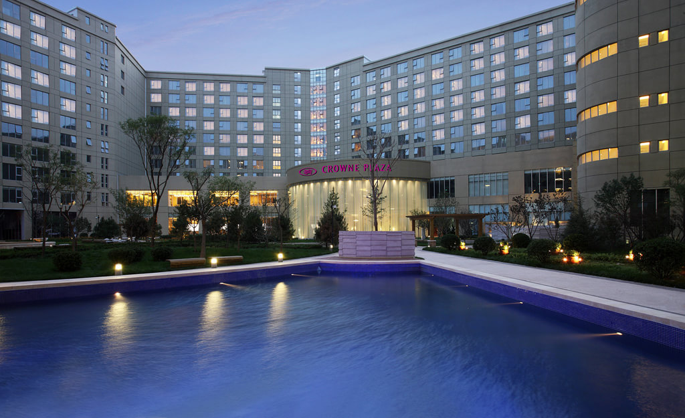
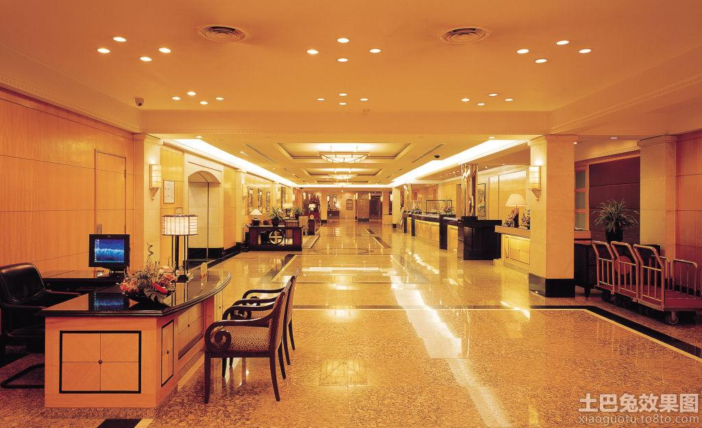
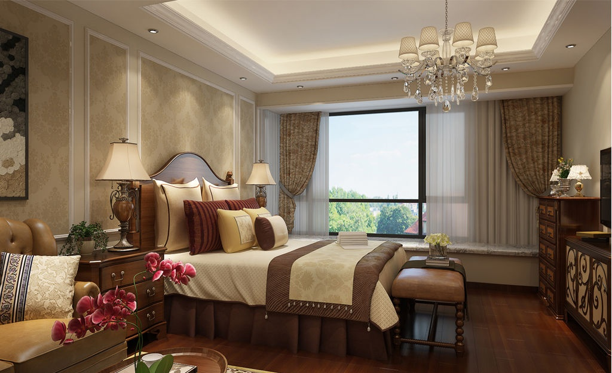

简介
信轩酒家是一家集客房、餐饮、会议于一体的豪华五星级标准休闲度假型酒店。酒店由主楼、会务楼、西楼三部分组成，有163间客房及各种风格迥异的中西式餐厅。酒店各式菜品以营养、健康为主题，可以满足宾客的不同需求，最大的宴会厅可容纳600余人同时用餐。酒店有国际一流的会议设施，可以满足多种高规格会议的需求。酒店还配有私人酒窖、游泳池、健身房、美发中心、商务中心等功能设施。
设计风格
以简约风格为主，为突出主题氛围，在此基础上，结合当代社会的审美理念及现代的人们对酒店的功能性的要求，增加了功能区域划分，充分地利用空间和美化空间为宗旨，在布局上保留了酒店的几大要素，大堂、过道、休闲、客房等区域，各区域之间相互呼应，特色鲜明而又总体统一。大量的米白色调加以暖色的灯光效果令人清新在高节奏的现代社会生活中具有协调人们心理使之平衡的作用。


住宿
信轩酒家定位“年轻时尚”，倡导绿色、环保、低碳的生活方式， 给入住客人大自然一般的清晰入住体验。 青皮树酒店大多数房间价格在150元-300元之间，配备独立卫生间、书桌、床头柜、24小时光纤上网、冷热水、 独立冷暖空调等，设施齐全，服务周到